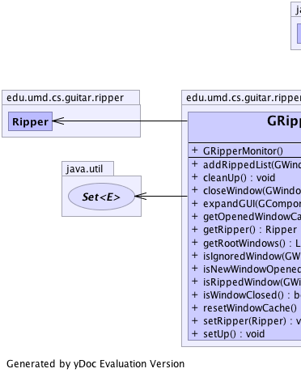
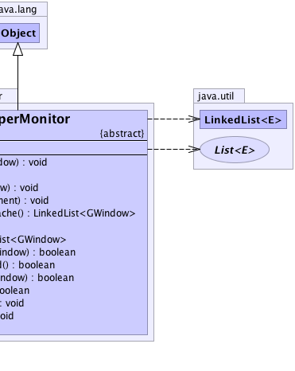

edu.umd.cs.guitar.ripper.GRipperMonitor
edu.umd.cs.guitar.ripper.GRipperMonitor
|
|||||||||
| PREV CLASS NEXT CLASS | FRAMES NO FRAMES | ||||||||
| SUMMARY: NESTED | FIELD | CONSTR | METHOD | DETAIL: FIELD | CONSTR | METHOD | ||||||||
java.lang.Object
public abstract class GRipperMonitor
Monitor the Ripper's behavior. This component handles platform-specific issues with the Ripper.
|  |  |
| Constructor Summary | |
|---|---|
GRipperMonitor()
|
|
| Method Summary | |
|---|---|
void |
addRippedList(edu.umd.cs.guitar.model.GWindow window)
Adds the ripped winodws to ripped window list |
abstract void |
cleanUp()
Do all steps after finishing ripping |
abstract void |
closeWindow(edu.umd.cs.guitar.model.GWindow window)
Close a window |
abstract void |
expandGUI(edu.umd.cs.guitar.model.GComponent component)
Try to do some actions on the component to reveal more GUI components. |
abstract java.util.LinkedList<edu.umd.cs.guitar.model.GWindow> |
getOpenedWindowCache()
Get a stack of window opened after an event. |
Ripper |
getRipper()
|
abstract java.util.List<edu.umd.cs.guitar.model.GWindow> |
getRootWindows()
Get a list of all root window. |
abstract boolean |
isIgnoredWindow(edu.umd.cs.guitar.model.GWindow window)
Define the criteria for ignoring windows we don't want to rip. |
abstract boolean |
isNewWindowOpened()
Detect if there is a window opened |
boolean |
isRippedWindow(edu.umd.cs.guitar.model.GWindow window)
checks for the rippedWindow |
abstract boolean |
isWindowClosed()
Detect if there is a window closing |
abstract void |
resetWindowCache()
Reset cache to store opened windows to empty |
void |
setRipper(Ripper ripper)
|
abstract void |
setUp()
All actions needed before ripping They can be starting application, adding window opened listener, and setting the application's context |
| Methods inherited from class java.lang.Object |
|---|
clone, equals, finalize, getClass, hashCode, notify, notifyAll, toString, wait, wait, wait |
| Constructor Detail |
|---|
public GRipperMonitor()
| Method Detail |
|---|
public abstract java.util.List<edu.umd.cs.guitar.model.GWindow> getRootWindows()
public abstract void setUp()
public abstract void cleanUp()
public abstract boolean isNewWindowOpened()
public abstract boolean isWindowClosed()
public abstract java.util.LinkedList<edu.umd.cs.guitar.model.GWindow> getOpenedWindowCache()
public abstract void resetWindowCache()
public abstract void closeWindow(edu.umd.cs.guitar.model.GWindow window)
window - public abstract boolean isIgnoredWindow(edu.umd.cs.guitar.model.GWindow window)
window -
public abstract void expandGUI(edu.umd.cs.guitar.model.GComponent component)
component - public Ripper getRipper()
public void setRipper(Ripper ripper)
ripper - the ripper to setpublic boolean isRippedWindow(edu.umd.cs.guitar.model.GWindow window)
window -
public void addRippedList(edu.umd.cs.guitar.model.GWindow window)
window -
|
|||||||||
| PREV CLASS NEXT CLASS | FRAMES NO FRAMES | ||||||||
| SUMMARY: NESTED | FIELD | CONSTR | METHOD | DETAIL: FIELD | CONSTR | METHOD | ||||||||